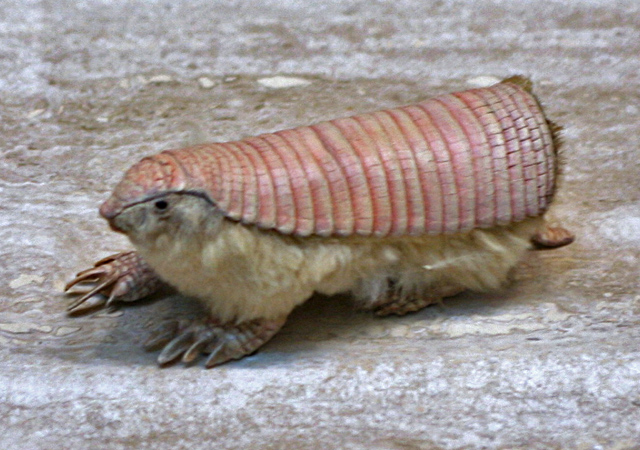

Pichiciego Pampeano

Informacion
Es un animal tan bonito
Que es?
Pichiciego menor, también llamado Pichiciego pampeano (Chlamyphorus truncatus).
Vive en la región central de Argentina y es el más pequeño de los armadillos, mide de 9 a 11.5 cm, es de un pálido color rosado, con pelos blancos en el vientre.

Caracteristicas
- Nocturno
- Hábitat subterráneo
- Extremidades le permiten casi nadar bajo tierra
-
No se sabe con exactitud qué tan abundante es su población por lo raro de sus avistamientos. Estado por año:
- 2008/2010 - Datos deficientes (DD)
- 2006 - Casi amenazado (NT)
- 1996 - En peligro de extinción (EN)
- 1982/1986/1988/1990/1994 - Insuficientemente conocido (K)
Dieta
- Hormigas
- Larvas
- Raíces de:
Más Informacion en:
Animal
Inicio